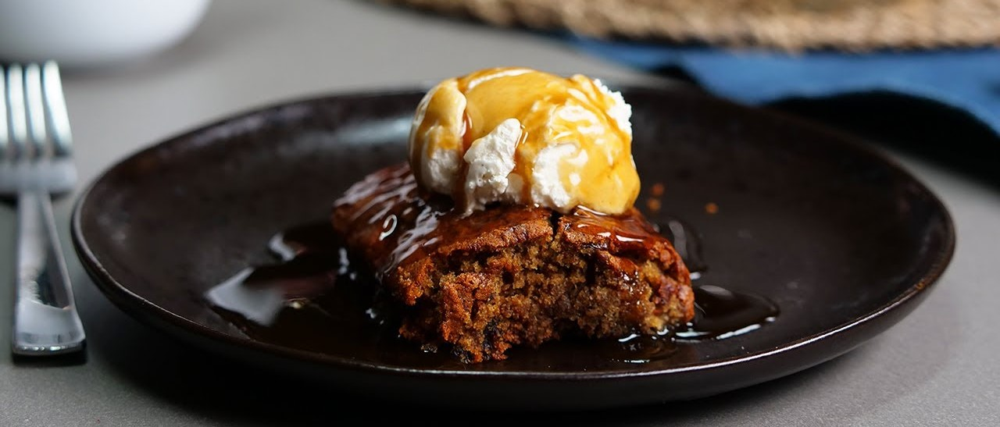

приготовление:
-
125 гр. сливочного масла подержать на столе до комнотной температуры. Мягкое масло взбить с 150 гр. коричневого сахара (light muscovado sugar) до однородности и бледности. По одному, перемешивая, добавить 2 больших яйца. Добавить 1 ст.л. golden syrup, 1 ст.л. черной патоки и 1 ч.л. ванильного экстракта. Взбить.
-
150 гр. фиников (medjool dates) порезать, достав косточки. Положить в кастрюльку, туда же отправить 250 мл. теплой воды, поставить на средний огонь, дождаться, когда начет покипывать.
-
В это время добавить в тесто 150 гр. самоподнимающейся муки, размешать миксером. Включить духовку греться на 180 градусов.
-
Когда финики покипывают уже 1-2 минуты, добавить в них 2 ч.л. соды, масса начнет бурлить и пузыриться - это ОК, помешать пару мгновений и в три подхода вмешать лопаткой в тесто. Итоговое тесто получится жидким, это нормально. Залить его в смазанную сливочным маслом форму. Выпекать в течение 45 минут.
-
Соус. В кастрюльку положить 100 гр. сливочного масла, 150 гр. коричневого сахара (dark muscovado sugar), 3 ст.л. golden syrup, 1 ч.л. ванильного экстракта, поставить на средний огонь и, помешивая, довести до пузыриков и растворения всего сахара за пару минут. После этого влить постепенно 150 мл. сливок 33%, размешать, добавить добрую щепотку морской соли (0,5 ст.л.) и, помешивая, поварить еще минуту.
-
Подавать теплый финиковый пирог, полив соусом и с шариком ванильного мороженого.